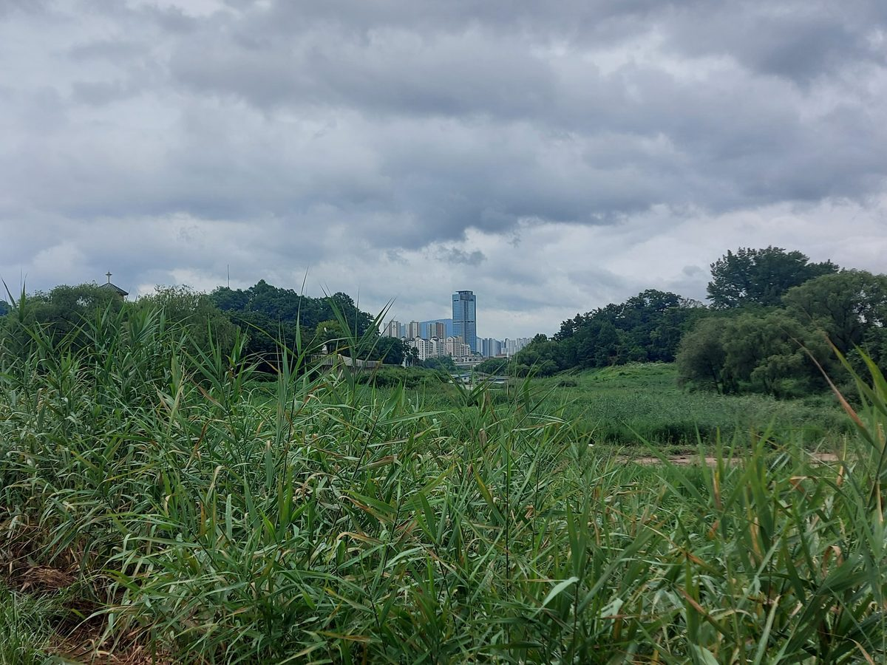

양평 개군레포츠공원에 800kW 햇빛소득마을 태양광 착공…수익은 마을 공동기금으로

한강수계관리기금 시범사업으로 군이 약 17억원 지원받아…2026년 말 준공 목표
경기 양평군 개군레포츠공원에 모두 800kW 규모의 태양광 발전설비를 짓는 공사가 21일 착공식과 함께 시작됐다. 한강수계관리기금 햇빛소득마을 시범사업으로 추진되며, 2026년까지 6개 시·군에 돌아가는 약 49억원 가운데 양평군 몫은 약 17억원이고 2026년 말 준공을 목표로 한다. 상수원보호구역 주민에게 꾸준한 소득원을 마련해 주려는 사업으로, 마을 공동시설과 지자체 시설에 설비를 놓고 발전 이익을 주민에게 돌려준다. 개군햇빛연금협동조합이 참여하며 가동 뒤 생기는 이익은 마을 공동기금 등으로 쓰일 예정이고, 착공식에는 군수와 군의회 의장, 조합 관계자, 주민 등 100여 명이 함께했다. 이승환 한강유역환경청장은 이 사업이 주민을 "생산자이자 주인"으로 만드는 일이라고 말했다.
시민에너지 관점
800kW 설비에 약 17억원의 공공기금이 들어간 이번 사업은 상수원 규제로 개발이 묶인 지역에서 햇빛을 새 소득원으로 돌리려는 시도로 보인다. 공적 기금으로 짓는 발전소라면 주민 몫이 형식에 그칠 수 있다는 우려도 있지만, 협동조합이 참여하고 이익을 마을 공동기금으로 모으는 구조는 개인 배당을 넘어 마을 전체의 살림을 키우는 방식이다. 주민이 전기를 쓰기만 하는 사람이 아니라 발전소의 주인이 될 때, 시설은 보조금 사업이 아니라 마을에 남는 공동 자산이 된다. 같은 기금을 받는 다른 시·군도 협동조합 지분과 공동기금 사용 원칙부터 분명히 정해 시범사업이 본사업의 기준이 되게 해야 한다.
개군햇빛연금협동조합은 마을 공동기금을 어디에 어떻게 쓸지 정하는 규칙을 가동 전에 주민 총회에서 정하고 공개할 수 있다. 양평군과 한강유역환경청은 2026년 말 준공까지 공사 진행과 사업비 사용 내역을 주민에게 알리는 자리를 정기적으로 마련해야 한다. 같은 기금을 받는 다른 시·군은 양평 사례를 바탕으로 협동조합 지분과 공동기금 원칙을 담은 공통 기준을 함께 만들 수 있다. 상수원보호구역 주민은 이 사업이 시범에 그치지 않도록 마을 공동시설 가운데 다음 설치 후보를 함께 찾아볼 수 있다.
출처: 아시아투데이 2026-10-21 박준성 원문 보기
楊平のケグン・レポーツ公園で800kWの太陽光所得村の太陽光が着工…収益は村の共同基金に
漢江水系管理基金のモデル事業で郡が約17億ウォンの支援…2026年末の完成を目指す
韓国・京畿道楊平郡のケグン・レポーツ公園に合計800kW規模の太陽光発電設備を建設する工事が、21日の着工式とともに始まった。漢江水系管理基金による太陽光所得村のモデル事業として進められ、2026年までに6つの市・郡に配分される約49億ウォンのうち楊平郡の分は約17億ウォンで、2026年末の完成を目指す。上水源保護区域の住民に安定した所得源を用意するための事業で、村の共同施設や自治体の施設に設備を置き、発電の利益を住民に還元する。ケグン太陽光年金協同組合が参加し、稼働後の利益は村の共同基金などに充てられる予定で、着工式には郡守や郡議会議長、組合関係者、住民など約100人が出席した。イ・スンファン漢江流域環境庁長は、この事業が住民を「生産者であり所有者」にするものだと述べた。
市民エネルギーの視点
800kWの設備に約17億ウォンの公的基金が投じられる今回の事業は、上水源の規制で開発が制限された地域で、太陽光を新たな所得源に変えようとする試みとみられる。公的基金で建てる発電所なら住民の取り分が形だけになりかねないという懸念もあるが、協同組合が参加し、利益を村の共同基金に積み立てる仕組みは、個人への配当を超えて村全体の暮らしを豊かにする方法だ。住民が電気を使うだけの存在ではなく発電所の所有者になるとき、施設は補助金事業ではなく村に残る共同の資産になる。同じ基金を受ける他の市・郡も、協同組合の持ち分と共同基金の使い道の原則をまず明確に定め、モデル事業が本事業の基準となるようにすべきだ。
ケグン太陽光年金協同組合は、村の共同基金を何にどう使うかを決めるルールを、稼働前に住民総会で定めて公開できる。楊平郡と漢江流域環境庁は、2026年末の竣工まで、工事の進み具合と事業費の使い道を住民に知らせる場を定期的に設けるべきだ。同じ基金を受ける他の市・郡は、楊平の事例をもとに、協同組合の持ち分と共同基金の原則を盛り込んだ共通の基準をともにつくることができる。上水源保護区域の住民は、この事業がモデルで終わらないよう、村の共用施設の中から次の設置候補を一緒に探すことができる。
出典: Asia Today 2026-10-21 Park Jun-sung 原文を読む
杨平Gaegun休闲运动公园800kW阳光收入村太阳能项目开工，收益纳入村共同基金
汉江水系管理基金试点项目，郡获约17亿韩元支持，目标2026年底竣工
在韩国京畿道杨平郡Gaegun休闲运动公园建设总规模800kW太阳能发电设施的工程，于21日随开工仪式正式启动。该项目作为汉江水系管理基金阳光收入村试点项目推进，在2026年前分配给6个市郡的约49亿韩元中，杨平郡获得约17亿韩元，目标是2026年底竣工。项目旨在为水源保护区居民提供稳定的收入来源，在村庄公共设施和地方政府设施上安装设备，把发电收益返还给居民。Gaegun阳光年金合作社参与其中，运行后的收益计划用于村共同基金等，开工仪式有郡守、郡议会议长、合作社相关人士和居民等约100人出席。汉江流域环境厅厅长Lee Seung-hwan表示，这一项目让居民成为“生产者和主人”。
市民能源视角
这次项目为800kW设施投入约17亿韩元公共基金，似乎是在因水源保护规制而开发受限的地区，尝试把阳光变成新的收入来源。有人担心用公共基金建设的电站，居民份额可能流于形式，但合作社参与并把收益汇入村共同基金的结构，超越了个人分红，是壮大全村生计的方式。当居民不只是用电者，而是电站的主人时，设施就不再是补贴项目，而是留在村里的共同资产。获得同一基金的其他市郡，也应先明确合作社持股和共同基金使用原则，使试点项目成为正式项目的标准。
开军阳光年金合作社可以在投运前通过居民大会确定并公开村共同基金的使用规则。杨平郡和汉江流域环境厅应在2026年底竣工前，定期向居民通报工程进度和项目经费使用情况。获得同一基金的其他市郡，可以以杨平案例为基础，共同制定载明合作社持股和共同基金原则的统一标准。水源保护区的居民可以一起在村公共设施中寻找下一个安装候选地，使这一项目不止于试点。
来源: Asia Today 2026-10-21 Park Jun-sung 查看原文
Construction starts on 800kW Sunlight Income Village solar at Yangpyeong's Gaegun park, with profits going to a village fund
County receives about 1.7 billion won under Han River water system fund pilot; completion targeted for end of 2026
Construction of solar facilities totaling 800kW at Gaegun Leports Park in Yangpyeong County, Gyeonggi Province, began with a groundbreaking ceremony on the 21st. The project is a Sunlight Income Village pilot under the Han River Water System Management Fund, and Yangpyeong's share is about 1.7 billion won of roughly 4.9 billion won going to six cities and counties through 2026, with completion targeted for the end of 2026. It aims to give residents of a water source protection zone a steady source of income, placing equipment on village shared facilities and local government buildings and returning generation profits to residents. The Gaegun Sunlight Pension Cooperative is taking part, profits after start-up are to go into a village common fund and other uses, and about 100 people including the county head, the county council chair, cooperative members and residents attended the ceremony. Lee Seung-hwan, head of the Han River Basin Environmental Office, said the project makes residents "producers and owners."
Citizen Energy View
Putting about 1.7 billion won of public money into an 800kW plant appears to be an attempt to turn sunlight into a new source of income in an area where water protection rules restrict development. Some may worry that in a plant built with public funds, the residents' share could be a formality, but a structure in which a cooperative takes part and profits are pooled in a village fund goes beyond individual dividends to strengthen the whole village. When residents become owners of the plant rather than just users of electricity, the facility becomes a shared asset that stays in the village, not a subsidy project. Other cities and counties receiving the same fund should first set clear rules on cooperative stakes and the use of common funds so the pilot can become the standard for the full program.
The Gaegun sunlight pension cooperative could set and publish, at a general meeting before the plant starts running, rules on where and how the village common fund will be spent. Yangpyeong County and the Han River Basin Environmental Office should hold regular sessions until completion at the end of 2026 to inform residents of construction progress and how the project budget is used. The other cities and counties receiving the same fund could build common standards for cooperative equity and common-fund rules based on Yangpyeong's case. Residents of the water-source protection area can look together among village shared facilities for the next site, so that the project does not stop at a pilot.
Source: Asia Today 2026-10-21 Park Jun-sung Read the original